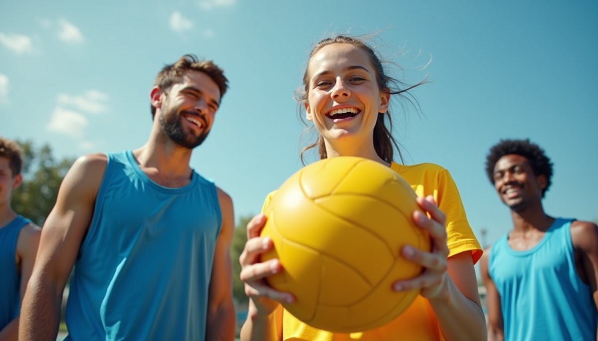

Leadership Development for High School Students in Volleyball Program

Are you a high school student passionate about volleyball and looking to enhance your leadership skills? Beyond the Net may just be the perfect opportunity for you!
Founded at Rice University, Beyond the Net is an organization that focuses on mentoring youth for college and leadership through the sport of volleyball. Their program is designed to provide individualized college application mentorship to high school students while also helping them develop crucial leadership qualities that will benefit them in their future endeavors.
Participating in Beyond the Net's volleyball program not only allows students to improve their athletic skills but also empowers them to take on leadership roles both on and off the court. Developing leadership skills during high school not only helps students become better team players but also sets them apart when it comes time to apply for college.
By joining Beyond the Net, students have the opportunity to engage in community service projects, take on leadership roles within the program, and build strong relationships with their peers and mentors. These experiences not only enrich their high school years but also provide valuable experiences that college admissions officers look for in prospective students.
If you're interested in joining Beyond the Net's volleyball program, be sure to check out their website for more information and sign up for this enriching opportunity. Who knows, this may just be the stepping stone you need to unlock your full potential both on and off the volleyball court.